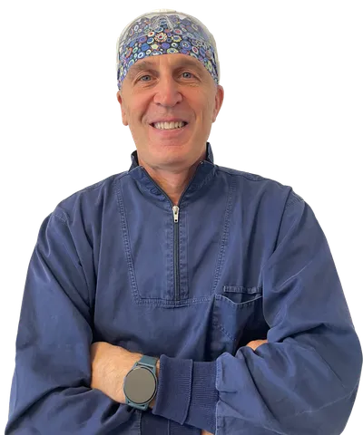

Dr. Andrea Minetti
Odontoiatra con oltre trent'anni di esperienza, il Dr. Andrea Minetti guida il Centro Medico Minetti come Direttore Sanitario dal 1992. Specializzato in ortodonzia, gnatologia, posturologia e medicina estetica, unisce competenza clinica e visione multidisciplinare nella cura del paziente.
Viale Pisa 10, 20146 Milano
Direttore Sanitario — Centro Medico Minetti
Dal 1992
Via del Foro 8, Tione di Trento
Direttore Sanitario — Centro Medico Odontoiatrico Gea
Dal 1993
Formazione
Aree di competenza
Ortodonzia
Correzione delle malocclusioni per bambini, adolescenti e adulti. Apparecchi tradizionali e allineatori trasparenti. Formazione avanzata con la Biogressive Therapy di Ricketts e Master di perfezionamento in Ortodonzia presso la New York University (USA).
Gnatologia
Diagnosi e trattamento delle disfunzioni dell'articolazione temporo-mandibolare (ATM), del bruxismo, dei dolori cranio-facciali e dei disturbi della masticazione. Formazione specifica in disfunzioni cranio-mandibolari presso Eurocclusion.
Medicina Estetica
Trattamenti non invasivi del viso: filler, biorivitalizzazione, trattamenti anti-aging. Master in Medicina Estetica presso l'Accademia IAPEM di Milano.
Posturologia
Studio delle correlazioni tra occlusione dentale, postura e equilibrio corporeo. Approccio integrato che collega l'odontoiatria alla cura della postura globale del paziente.
Ruoli professionali
Viale Pisa 10, Milano — Studio dentistico e poliambulatorio attivo dal 1964.
Via del Foro 8, Tione di Trento — Centro odontoiatrico nelle Giudicarie.
Responsabile del Sistema di Gestione Qualità nel settore degli impianti dentali.
Responsabile del Sistema di Gestione Qualità nel settore della tecnologia odontoiatrica innovativa.
Prenota una visita con il Dr. Minetti
Disponibile a Milano (Viale Pisa 10) e a Tione di Trento (Via del Foro 8).